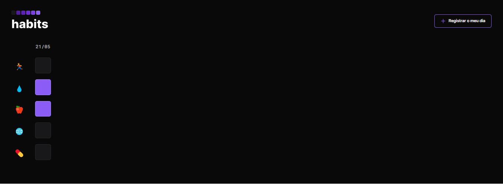

NLW - Rocketseat
Registro de Hábitos.

Neste projeto, você pode registrar alguns hábitos que foram disponibilizados de forma a serem os mais comuns no dia a dia, eles são: atividade fisica, hidratação, alimentação, estudos e remédios.Neste projeto foi utilizado as seguintes tecnologias: html, css e javascript.